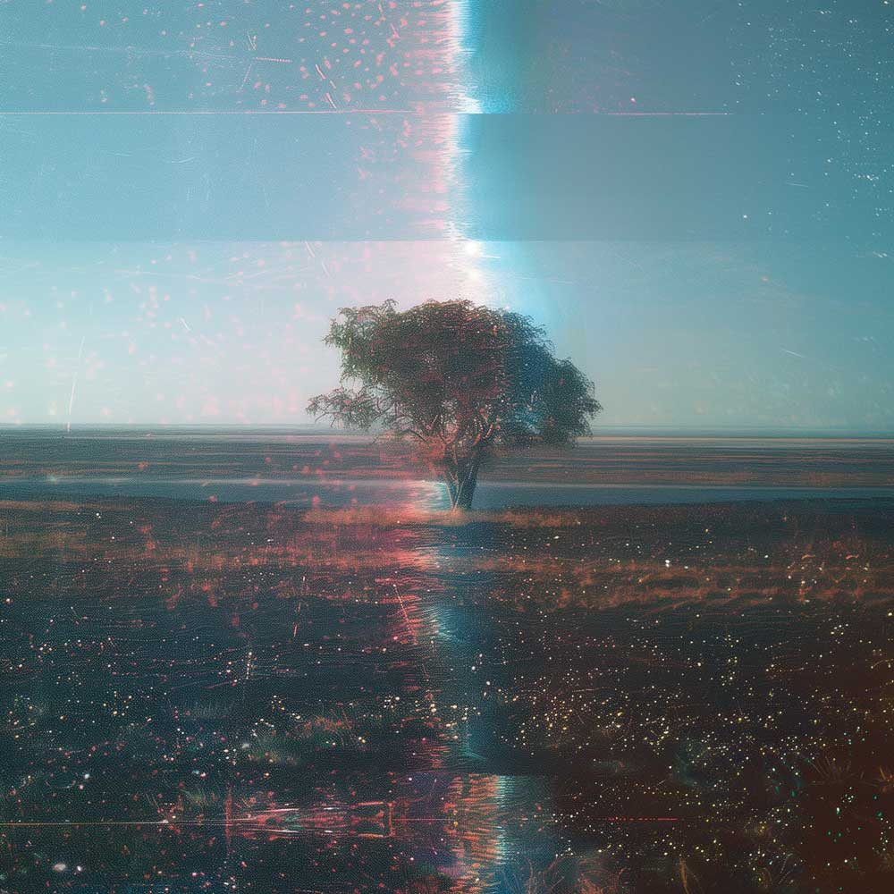

VK Open Source
Bienvenidos a la instancia abierta del programa de creación de un artista. En esta sección encontrarás instrucciones caóticas, talleres no convencionales, materia prima para crear y la guía para contribuir en este proyecto.
Esta parte del sitio pretende ser un canal de apertura para que crezca la colaboración en la totalidad de esta página web y por fuera de ella.
